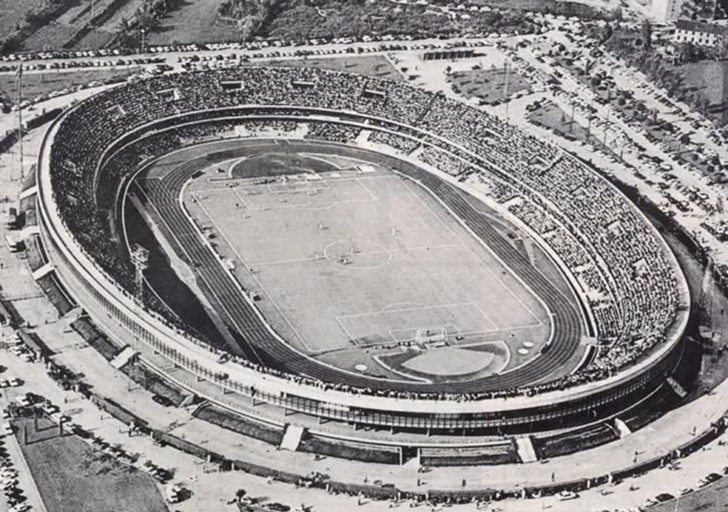
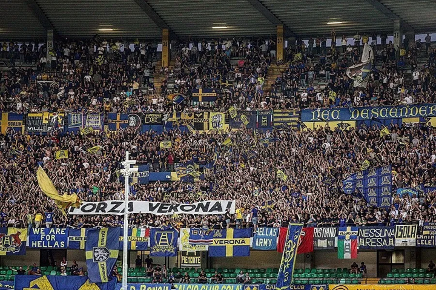

It was designed by engineer Leopoldo Baruchello according to a solution that is very rare in the panorama of Italian sports facilities, namely by superimposing three tiers of stairs. Inaugurated on 15 December 1963, it replaced the old municipal stadium of the same name that was located in the Piazza Cittadella area. It has an eight-lane athletics track that was revolutionised in August 2010 (the old track had deteriorated) and replaced by a new asphalt track, painted in the colours blue and yellow and open for skating. Its capacity has changed over the years, especially after the Italia 90 World Cup when all sectors were covered and vacant seats were eliminated. It currently has 42,160 seats, distributed over a parterre (of which only the eastern part is now open to the public, limited to the disabled and their accompanying persons), three overlapping rings (armchairs, grandstand and upper grandstand) and a press box (182 seats). Nicknamed Stadio dei quarantamila (Stadium of Forty Thousand) at the time of its construction, the Bentegodi looks like a large elliptical amphitheatre on the inside. It is dedicated to the memory of Marcantonio Bentegodi, the historic benefactor of 19th century Veronese sport. Designed to replace the old 'Bentegodi' that debuted in 1910, the new stadium, which cost around one billion lira at the time (€ 11420000) was inaugurated on 15 December 1963 on the occasion of the Serie B match between Verona and Venezia, won 1-0 by the latter. The record attendance was recorded on 23 January 1983 on the occasion of Verona v Roma, 47 896 spectators (of which 38 767 paying and 9 129 subscribers). In the 1984-85 season it was the scene of Verona winning the Scudetto, while the 2000-01 season saw Chievo's first promotion to Serie A. In 1985 construction work began on the third ring and the roof, in preparation for the 1990 World Cup in Italy. The stadium was then enlarged but without a significant change in the number of seats as the escape routes were widened and numbered seats were installed. In the 1990 World Cup Italy, the Bentegodi hosted Group E (Belgium, South Korea, Spain, Uruguay) and the round of 16 between Spain and Yugoslavia. The spectator record for the enlarged and roofed Bentegodi came on 6 November 1988 with a Verona-Milan match with 47,798 spectators (35,077 paying fans and 12,721 season ticket holders), 98 fewer than the 1983 record. It was also the venue for the 1996-97 rugby championship final between Benetton Treviso and AC Milan, a match won by the Venetians 34-29.
The South Curve has historically been reserved for Hellas Verona fans, while since the 2015-16 season the North Curve has been reserved for Chievo supporters, after a small 'struggle' lasting several years to obtain the corner that, for organisational reasons, the municipality did not grant them; consequently, visiting fans take their seats in the Upper North Curve during the Scaligeri's home games, and in the Upper South Curve during the home matches of the Clivens fans. The West Stand (bench side) is instead equipped for the press[7]. The pitch measures 105x68 m. Between July and December 2009 a photovoltaic system worth around 4 million euros and with a nominal power of around 1 MW (9591 m² of panels for a power output of 999 kWp) was installed on the roof of the Bentegodi, making it the first solar stadium in Italy and the largest photovoltaic system in Italy on a sports facility, thanks to the installation of 13,328 solar panels; the proceeds from the energy produced amply cover the maintenance costs of the sports facility. On 13 October 2010, the facility hosted a match of Italy's national rugby team of 15 against Argentina, which ended with the defeat of the Azzurri with a score of 16 to 22. On 6 April 2014 the Bentegodi hosted for the first, and currently only, time the city's third professional club, Virtus Verona, engaged in Lega Pro against Alessandria.
